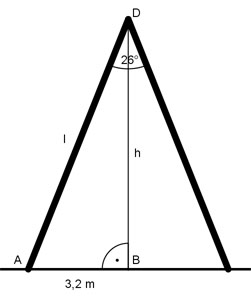

Aufgabe 74 Wie hoch reicht und wie lang ist eine Stehleiter, die eine Stützweite von 3,2 m und einen Öffnungswinkel von 26° hat?

Im Dreieck ABC: 3,2/2 m sin 26/2° ----------- |*l l l * sin 26/2° * 1,6 m |:sin 13° 1,6 m 1,6 m l = ---------- = --------- = 7,1 m sin 13° 0,225 3,2/2 m tan 26/2° ----------- |*h h h * tan 26/2° * 1,6 m | :tan 13° 1,6 m 1,6 m h = --------- = --------- = 6,9 m tan 13° 0,2309